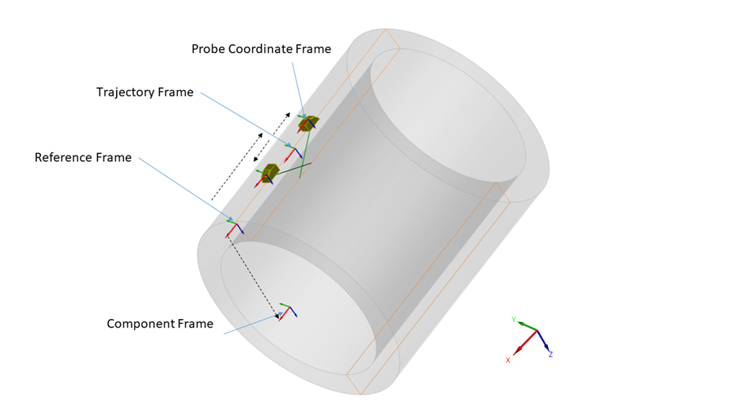
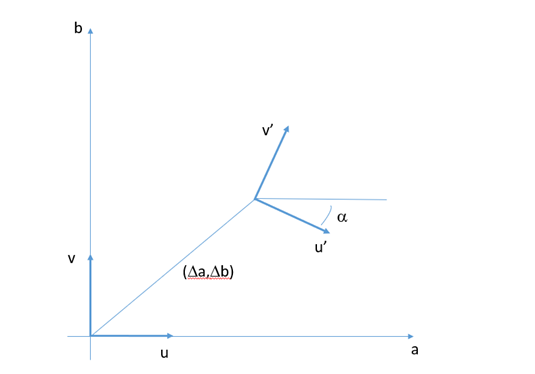

Open NDE File Format specification - Version 0.9.0
Generalities
Preamble
The present document is the outcome of the work of a COFREND Working Group dedicated to NDE and Data. It stems from the observation that no satisfying standardisation exists in terms of file formats for the eddy current NDE technique. This document is therefore a technical proposal to facilitate the establishment of a neutral and open format that can be a good candidate for a wide standardization effort. The objective that was assigned by the Working Group to this file format is to store eddy current raw data to be able to: - (re)analyse it, including eddy current metadata required for report generation, or - (re)use it for further data processing. - achieve interoperability between acquisition systems and analysis software.
The objective is neither to be able to (re)produce an acquisition setup nor to (re)create a simulation configuration from the eddy current data file alone. We define as raw data the data which is produced by the acquisition system (complex values for each frequency, encoders data for each point, filtering, CSCAN reconstructions).
For this first version, it was decided to stick to the data acquired and the information that is necessary to perform an analysis. With a few exceptions, we did not add the information that is related to the analysis procedure itself (information related to the display, palette, etc…). This will be addressed in future stages (information related to analysis, reporting, ...).
The Working Group has analysed several existing contributions as a working basis to define an open and standardized file format for ultrasonic testing. Formats coming from organisations (ECUF, MFMC, DICONDE) and commercial products (EVIDENT, EDDYFI, CIVA) have been studied. It was decided that the format would be based on the HDF5 framework, chosen for its well-established software ecosystem and its efficiency. The Eddy current format derives from the ultrasonic file format proposed by the same working group. The ultrasonic proposal makes technical choices akin to those of the MFMC and ECUF formats, and extends their possibilities in order to accommodate for a larger range of specimen geometries and types of data that are commonly encountered and were absent of the MFMC and ECUF specifications.
Discussions in the working group emerged to find the best compromise between two approaches : a very generic one with essentially raw geometric descriptions and a NDT oriented one with a representation of the objects familiar to the engineers. Considering that the transformation from NDT objects to the generic representation was straightforward, it was decided to systematically keep the generic representation and to allow to complement this representation with optional fields describing the objects. This approach was essentially adopted for three objects, namely the probe, the trajectory and the setup of the electronic laws.
From an HDF5 structure perspective, architecture (flat or hierarchical) is not imposed. The nature of the blocks is identified by the TYPE attribute, a VERSION attribute being provided for revisions. Where data from another structure in the file is necessary, its location is given through a HDF5 link. In order to allow the proposed file format to coexist with other hdf5 file formats, the raw data (arrays of signals or array of images which typically represents the vast majority of the file weight) can be anywhere in the file structure. In order to avoid name conflicts issues when the file format will evolve, no other data is allowed within this group. Everything is allowed outside from this group, it will be ignored by reader but can be used for instrument specific data.
SI units are used.
The eddy current values themselves are agnostic in terms of units. All operations on eddy current data are supposing binary unit. Ex : add an offset will be done with offset specified in bits.
Three states are defined: Mandatory, Optional and Implicit (implicit means that value can be derived from other mandatory data). For implicit field, one reasonable rule to make such derivation is given either in the description column or in the notes subsection following each table.
Data types will be converted to HDF5 classes, the data will be given one of the three states above and be defined as Dataset or Attribute.
Tables legend
Hereafter, when pointing to ultrasonic HDF5 file format, we refer to specification document xxxx [yyy].
Variables used in structure definition:
Definitions
- ET data point : a demodulated complex number (operating point) obtained at one frequency.
- Probe
- Sensor group : collection of sensors (topology) which gives coherent data
- Dataset : a collection of coherent data obtained at a particular probe position consisting of at least one of the following:
- Demodulated data obtained using different emitters and receivers combination for each excitation frequency;
- Encoder data and/or temporal data and/or rotation synchronization
As in the UT format, Encoder data (or equivalent) are stored in the trajectory block. - CSCAN Sequence – a collection of dataframes in which all acquisition parameters except the probe position are fixed from one dataframe to another;
| Variable | Description |
|---|---|
| N_Probes | Number of probes |
| N_Prob |
Number of probes used in the m-th dataset |
| N_Dataset | Number of datasets |
| N_SENSOR_GROUP(p) | Number of sensor groups of p-th probe |
| N_SENSOR(p) | Number of sensors in the p-th sensor group |
| N_DF(m) | Number of points in m-th dataset |
| N_Time(m) | Number of time-points per in m-th dataset |
| N_Acquisition_Group\<M> | Number of Acquisition group for the m-th |
| N_U(m) | Number of acquisition positions in the U direction for the m-th dataset |
| N_V(m) | Number of acquisition positions in the V direction for the m-th dataset |
| N_Pos(m) | Number of acquisition positions in the V direction for the m-th dataset |
Note : if N_U and N_V are defined (grid-like acquisition), N_DF(m) = N_U(m) x N_V(m)
Data Model
The data model of an ONDE file is described through fields that are grouped by blocks, each block corresponding to a NDE concept.
classDiagram
ONDE_COMPONENT <|-- ONDE_2DCAD
ONDE_2DCAD o-- ONDE_BINARYFILE : CAD
ONDE_COMPONENT <|-- ONDE_3DCAD
ONDE_3DCAD o-- ONDE_BINARYFILE : CAD
ONDE_SPATIAL_TRAJECTORY <|-- ONDE_ACQUISITION_GRID
ONDE_ACQUISITION_GRID o-- ONDE_COMPONENT : REFERENCE_SPECIMEN
ONDE_BINARYFILE <|-- ONDE_BINARYFILE_EMBEDDED
ONDE_COMPONENT o-- ONDE_BINARYFILE : VISUALIZATION_CAD
ONDE_COMPONENT o-- ONDE_BINARYFILE : IMAGE
ONDE_COMPUTATION <|-- ONDE_COMPUTATION_ELEMENTARY
ONDE_COMPUTATION_ELEMENTARY o-- ONDE_COMPUTATION_ELEMENTARY : PROCESS
ONDE_COMPUTATION_ELEMENTARY <|-- ONDE_COMPUTATION_ELEMENTARY_FILTER
ONDE_COMPUTATION_ELEMENTARY <|-- ONDE_COMPUTATION_ELEMENTARY_INIT
ONDE_COMPUTATION_ELEMENTARY_INIT o-- ONDE_DATASET : DATA
ONDE_COMPUTATION_ELEMENTARY <|-- ONDE_COMPUTATION_ELEMENTARY_INTERPOLATE
ONDE_COMPUTATION_ELEMENTARY <|-- ONDE_COMPUTATION_ELEMENTARY_MEDIANFILTER
ONDE_COMPONENT <|-- ONDE_CYLINDER
ONDE_DATASET o-- ONDE_SETUP : SETUP
ONDE_DATASET o-- ONDE_DIMENSION : AMPLITUDE_DIMENSION
ONDE_DATASET o-- ONDE_DIMENSION : INDEX_DIMENSIONS
ONDE_DATASET <|-- ONDE_DATASET_ET
ONDE_DATASET_ET <|-- ONDE_DATASET_ET_CSCAN
ONDE_DATASET_ET_CSCAN o-- ONDE_ACQUISITION_GRID : CSCAN_GRID
ONDE_DATASET_ET <|-- ONDE_DATASET_ET_RAW
ONDE_DATASET <|-- ONDE_DATASET_UT
ONDE_DATASET_UT <|-- ONDE_DATASET_UT_ASCAN
ONDE_DATASET_UT <|-- ONDE_DATASET_UT_CSCAN
ONDE_DATASET_UT_CSCAN o-- ONDE_ACQUISITION_GRID : CSCAN_GRID
ONDE_DATASET_UT_CSCAN o-- ONDE_UT_EXTRACTION : EXTRACTION
ONDE_DATASET_UT <|-- ONDE_DATASET_UT_TSCAN
ONDE_WEDGE <|-- ONDE_DUAL_WEDGE
ONDE_ET_ACQUISITION_GROUP o-- ONDE_ET_SENSOR_GROUP : SENSOR_GROUP
ONDE_PROBE <|-- ONDE_ET_PROBE
ONDE_ET_PROBE <|-- ONDE_ET_PROBE_PLANE
ONDE_ET_PROBE <|-- ONDE_ET_PROBE_TUBE
ONDE_ET_SENSOR_GROUP o-- ONDE_ET_PROBE : PROBE
ONDE_ET_SENSOR_GROUP <|-- ONDE_ET_SENSOR_GROUP_CYLINDRICAL
ONDE_ET_SENSOR_GROUP <|-- ONDE_ET_SENSOR_GROUP_PLANE
ONDE_ET_SENSOR_GROUP <|-- ONDE_ET_SENSOR_GROUP_RANDOM
ONDE_GEOMETRIC_SETUP o-- ONDE_COMPONENT : COMPONENT
ONDE_GEOMETRIC_SETUP o-- ONDE_PROBE : PROBE_LIST
ONDE_GEOMETRIC_SETUP o-- ONDE_ACQUISITION_TRAJECTORY : ACQUISITION_TRAJECTORY
ONDE_UT_COUPLING <|-- ONDE_IMMERSION
ONDE_UT_PROBE <|-- ONDE_LINEAR_UT_PROBE
ONDE_UT_PROBE <|-- ONDE_MATRIX_UT_PROBE
ONDE_UT_PROBE <|-- ONDE_MONO_UT_PROBE
ONDE_PHASED_ARRAY_SETUP <|-- ONDE_PHASED_ARRAY_ANGLE
ONDE_PHASED_ARRAY_SETUP <|-- ONDE_PHASED_ARRAY_COMPOUND
ONDE_PHASED_ARRAY_SETUP <|-- ONDE_PHASED_ARRAY_ESCAN
ONDE_PHASED_ARRAY_SETUP <|-- ONDE_PHASED_ARRAY_FMC
ONDE_PHASED_ARRAY_SETUP <|-- ONDE_PHASED_ARRAY_PWI
ONDE_PHASED_ARRAY_SETUP o-- ONDE_UT_PROBE : EMITTER_PROBE
ONDE_PHASED_ARRAY_SETUP o-- ONDE_UT_PROBE : RECEIVING_PROBE
ONDE_PHASED_ARRAY_SETUP <|-- ONDE_PHASED_ARRAY_SSCAN
ONDE_COMPONENT <|-- ONDE_PLANE
ONDE_COMPUTATION_ELEMENTARY <|-- ONDE_PROCESS_STANDARDISATION
ONDE_SETUP o-- ONDE_GEOMETRIC_SETUP : GEOMETRIC_SETUP
ONDE_SETUP <|-- ONDE_SETUP_ET
ONDE_SETUP_ET o-- ONDE_ET_ACQUISITION_GROUP : ET_SETUP
ONDE_SETUP <|-- ONDE_SETUP_UT
ONDE_SETUP_UT o-- ONDE_ULTRASONIC_SETUP : ULTRASONIC_SETUP
ONDE_WEDGE <|-- ONDE_SINGLE_WEDGE
ONDE_ACQUISITION_TRAJECTORY <|-- ONDE_SPATIAL_TRAJECTORY
ONDE_ACQUISITION_TRAJECTORY <|-- ONDE_TIME_TRAJECTORY
ONDE_ULTRASONIC_SETUP o-- ONDE_PHASED_ARRAY_SETUP : PHASED_ARRAY_SETUP
ONDE_ULTRASONIC_SETUP o-- ONDE_UT_LAW : TRANSMIT_LAW
ONDE_ULTRASONIC_SETUP o-- ONDE_UT_LAW : RECEIVE_LAW
ONDE_COMPUTATION <|-- ONDE_UT_EXTRACTION
ONDE_UT_EXTRACTION o-- ONDE_UT_GATE : START
ONDE_UT_GATE o-- ONDE_UT_GATE : SYNCHRONIZATION_SOURCE
ONDE_UT_LAW o-- ONDE_UT_PROBE : PROBE
ONDE_PROBE <|-- ONDE_UT_PROBE
ONDE_UT_PROBE o-- ONDE_UT_COUPLING : COUPLING
ONDE_UT_COUPLING <|-- ONDE_WEDGE
ONDE_COMPONENT <|-- ONDE_WELD
click ONDE_2DCAD href "onde_component/onde_2dcad/index.html"
click ONDE_3DCAD href "onde_component/onde_3dcad/index.html"
click ONDE_ACQUISITION_GRID href "onde_acquisition_trajectory/onde_spatial_trajectory/onde_acquisition_grid/index.html"
click ONDE_ACQUISITION_TRAJECTORY href "onde_acquisition_trajectory/index.html"
click ONDE_BINARYFILE href "onde_binaryfile/index.html"
click ONDE_BINARYFILE_EMBEDDED href "onde_binaryfile/onde_binaryfile_embedded/index.html"
click ONDE_COMPONENT href "onde_component/index.html"
click ONDE_COMPUTATION href "onde_computation/index.html"
click ONDE_COMPUTATION_ELEMENTARY href "onde_computation/onde_computation_elementary/index.html"
click ONDE_COMPUTATION_ELEMENTARY_FILTER href "onde_computation/onde_computation_elementary/onde_computation_elementary_filter/index.html"
click ONDE_COMPUTATION_ELEMENTARY_INIT href "onde_computation/onde_computation_elementary/onde_computation_elementary_init/index.html"
click ONDE_COMPUTATION_ELEMENTARY_INTERPOLATE href "onde_computation/onde_computation_elementary/onde_computation_elementary_interpolate/index.html"
click ONDE_COMPUTATION_ELEMENTARY_MEDIANFILTER href "onde_computation/onde_computation_elementary/onde_computation_elementary_medianfilter/index.html"
click ONDE_CYLINDER href "onde_component/onde_cylinder/index.html"
click ONDE_DATASET href "onde_dataset/index.html"
click ONDE_DATASET_ET href "onde_dataset/onde_dataset_et/index.html"
click ONDE_DATASET_ET_CSCAN href "onde_dataset/onde_dataset_et/onde_dataset_et_cscan/index.html"
click ONDE_DATASET_ET_RAW href "onde_dataset/onde_dataset_et/onde_dataset_et_raw/index.html"
click ONDE_DATASET_UT href "onde_dataset/onde_dataset_ut/index.html"
click ONDE_DATASET_UT_ASCAN href "onde_dataset/onde_dataset_ut/onde_dataset_ut_ascan/index.html"
click ONDE_DATASET_UT_CSCAN href "onde_dataset/onde_dataset_ut/onde_dataset_ut_cscan/index.html"
click ONDE_DATASET_UT_TSCAN href "onde_dataset/onde_dataset_ut/onde_dataset_ut_tscan/index.html"
click ONDE_DIMENSION href "onde_dimension/index.html"
click ONDE_DUAL_WEDGE href "onde_ut_coupling/onde_wedge/onde_dual_wedge/index.html"
click ONDE_ET_ACQUISITION_GROUP href "onde_et_acquisition_group/index.html"
click ONDE_ET_PROBE href "onde_probe/onde_et_probe/index.html"
click ONDE_ET_PROBE_PLANE href "onde_probe/onde_et_probe/onde_et_probe_plane/index.html"
click ONDE_ET_PROBE_TUBE href "onde_probe/onde_et_probe/onde_et_probe_tube/index.html"
click ONDE_ET_SENSOR_GROUP href "onde_et_sensor_group/index.html"
click ONDE_ET_SENSOR_GROUP_CYLINDRICAL href "onde_et_sensor_group/onde_et_sensor_group_cylindrical/index.html"
click ONDE_ET_SENSOR_GROUP_PLANE href "onde_et_sensor_group/onde_et_sensor_group_plane/index.html"
click ONDE_ET_SENSOR_GROUP_RANDOM href "onde_et_sensor_group/onde_et_sensor_group_random/index.html"
click ONDE_GEOMETRIC_SETUP href "onde_geometric_setup/index.html"
click ONDE_IMMERSION href "onde_ut_coupling/onde_immersion/index.html"
click ONDE_LINEAR_UT_PROBE href "onde_probe/onde_ut_probe/onde_linear_ut_probe/index.html"
click ONDE_MATRIX_UT_PROBE href "onde_probe/onde_ut_probe/onde_matrix_ut_probe/index.html"
click ONDE_MONO_UT_PROBE href "onde_probe/onde_ut_probe/onde_mono_ut_probe/index.html"
click ONDE_PHASED_ARRAY_ANGLE href "onde_phased_array_setup/onde_phased_array_angle/index.html"
click ONDE_PHASED_ARRAY_COMPOUND href "onde_phased_array_setup/onde_phased_array_compound/index.html"
click ONDE_PHASED_ARRAY_ESCAN href "onde_phased_array_setup/onde_phased_array_escan/index.html"
click ONDE_PHASED_ARRAY_FMC href "onde_phased_array_setup/onde_phased_array_fmc/index.html"
click ONDE_PHASED_ARRAY_PWI href "onde_phased_array_setup/onde_phased_array_pwi/index.html"
click ONDE_PHASED_ARRAY_SETUP href "onde_phased_array_setup/index.html"
click ONDE_PHASED_ARRAY_SSCAN href "onde_phased_array_setup/onde_phased_array_sscan/index.html"
click ONDE_PLANE href "onde_component/onde_plane/index.html"
click ONDE_PROBE href "onde_probe/index.html"
click ONDE_PROCESS_STANDARDISATION href "onde_computation/onde_computation_elementary/onde_process_standardisation/index.html"
click ONDE_SETUP href "onde_setup/index.html"
click ONDE_SETUP_ET href "onde_setup/onde_setup_et/index.html"
click ONDE_SETUP_UT href "onde_setup/onde_setup_ut/index.html"
click ONDE_SINGLE_WEDGE href "onde_ut_coupling/onde_wedge/onde_single_wedge/index.html"
click ONDE_SPATIAL_TRAJECTORY href "onde_acquisition_trajectory/onde_spatial_trajectory/index.html"
click ONDE_TIME_TRAJECTORY href "onde_acquisition_trajectory/onde_time_trajectory/index.html"
click ONDE_ULTRASONIC_SETUP href "onde_ultrasonic_setup/index.html"
click ONDE_UT_COUPLING href "onde_ut_coupling/index.html"
click ONDE_UT_ELEMENTS href "onde_ut_elements/index.html"
click ONDE_UT_EXTRACTION href "onde_computation/onde_ut_extraction/index.html"
click ONDE_UT_GATE href "onde_ut_gate/index.html"
click ONDE_UT_LAW href "onde_ut_law/index.html"
click ONDE_UT_PROBE href "onde_probe/onde_ut_probe/index.html"
click ONDE_WEDGE href "onde_ut_coupling/onde_wedge/index.html"
click ONDE_WELD href "onde_component/onde_weld/index.html"Figure 1: Relationships between the different blocks in the data model
The ONDE format introduces an inheritance mechanism in order to specify the attributes that are mandatory and optional for a given group. The diagram in Figure 1 explains the relationships between the different blocks in the data model in an UML style.
Two blocks type contain the data : namely, CSCAN and RAW blocks. RAW can be used either to describe time dependent signals or elementary channels data. For Cscan block, it is possible to keep the track to the raw data from which the Cscan data originates. A link to the setup can be specified : it is attached to the raw data if it is available, to the post-processed data (Cscan) otherwise.
The setup description is organized in two blocks defining the eddy current setup and the geometric setup. In the eddy current setup we find the description of the electronic settings, with blocks describing the reference to an array of sensors (sensor group).
The geometric setup contains the dynamic description of the scene : inspected component, probes and acquisition trajectories. It is possible to define different trajectories for different probes or to have probes sharing the same trajectory, offsets retrieving the set of different probe positions from the trajectory.
HDF5 implementation
Relationship between the HDF5 implementation and the data model
The mechanisms used in the ONDE specification to map the data model specification to the HDF5 implementation are described above.
Entry points for navigating files in the UT implementation
The blocks defined in the general structure are implemented as HDF5 groups, the name of which is free but which have a mandatory 'ONDE:TYPE' attribute that defines their nature. The entry points are the Dataset groups (namely groups that have as a ONDE:TYPE attribute ONDE_DATASET_ET_CSCAN or ONDE_DATASET_ET_RAW)
When discovering the content of a given file, the following procedure must therefore be applied :
- Read the 'ONDE_FILETYPE' and 'ONDE_VERSION' attributes at root level and verify the compatibility of the version number with the reader, and that the type is that of a ET ONDE file ('ONDE_ET')
- Read all groups in the file and identify the groups corresponding to the datasets blocks by checking which groups have a 'TYPE' attribute whose value is 'ONDE_DATASET_ET_RAW', 'ONDE_DATASET_ET_CSCAN'.
- From there follow the HDF5 references defined in the specification to retrieve the data arrays, the related datasets, the setup information, ...
Definition of frames
3D Frames
Figure 2 displays the different frames and convention involved in the positioning systems. The PCF (Probe Coordinate Frame) is the frame that is related to a specific probe or set of probes. It can be arbitrarily chosen to be centered along one of the sensor center, the index point, the carrier system etc... Through a rigid-body offset, it is related to the Trajectory Frame (TF), which for a given position is defined in relation to the Reference Frame. The list of these positions are defined in an Acquisition Trajectory block.
The components frames are defined in the Reference Frame.

Figure 2: Different frames and convention involved in the positioning systems
In the document, it was chosen to define the transformation between two frames in the shape of a vector consisting of 7 values: 3 for the offset in terms of x,y,z directions, 4 for the rotation defining the frame expressed in terms of quaternions. The definition of rotations through quaternions was chosen because of its compactness and the absence of ambiguity (as opposed to Euler angles which require defining an ordering of the directions).
The Wikipedia pages related to quaternion and rotation matrices provide formulae for the transition from the quaternion shape to rotation matrices and the reverse operation: https://en.wikipedia.org/wiki/Rotation_matrix#Quaternion.
Throughout the document, a frame is provided for the following objects :
- The specimen frame,
- The trajectory frames (a frame for each position in the trajectory)
- The probe coordinate frames
- The sensors groups
- The index points
The diagram displayed in Figure 3 defines the hierarchy between these frames:

Figure 3: Hierarchy of the frames used for the geometric representation of the objects
2D Frames
In order to refer to frames on unfolded 2D surfaces, we introduce the following transformation : the transformation between frame (O,u,v) and (O',u',v') is expressed in the (O,a,b) frame by the (∆a,∆b,α) triplet.

Figure 4: Definition of the (∆a,∆b,α) triplet defining transformation between two 2D frames
Appendix A -- conversion from quaternions to matrices
when dealing with 3D orientations, to define the quaternion corresponding to the orientation of one reference frame relative to another, we need the following formula to calculate the components of a quaternion, q, from the elements of a rotation matrix, R:
\(q_{1} = \ \frac{1}{2}\sqrt{1 + r_{1,1} + r_{2,2} + r_{3,3}}\)
\(q_{2} = \ \frac{1}{2}sign(r_{3,2} - r_{2,3)}\)\(\sqrt{1 + r_{1,1} - r_{2,2} - r_{3,3}}\)
\(q_{3} = \ \frac{1}{2}sign(r_{1,3} - r_{3,1)}\)\(\sqrt{1 - r_{1,1} + r_{2,2} - r_{3,3}}\)
\(q_{4} = \ \frac{1}{2}sign(r_{2,1} - r_{1,2)}\)\(\sqrt{1 - r_{1,1} - r_{2,2} + r_{3,3}}\)
Where
If q is the unit quaternion corresponding to the rotation matrix R, then -q is the other quaternion corresponding to the same orientation.
Similarly, if you have a unit quaternion q and want to convert it to a rotation matrix R, the formula is:
Source:Quaternions and Rotation Sequences: A Primer with Applications to Orbits, Aerospace and Virtual Reality by J. B. Kuipers (Chapter 5, Section 5.14 "Quaternions to Matrices", pg. 125)